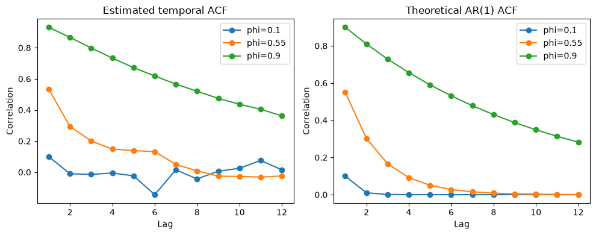
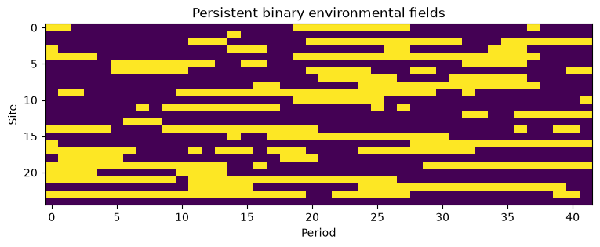
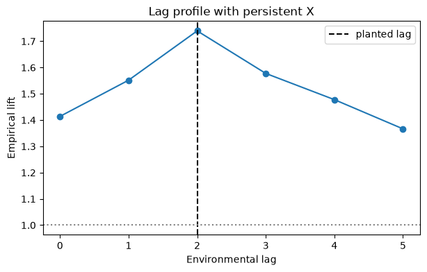
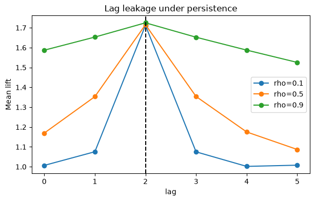

18. Chapter E. Spatio-temporal Processes#
18.1. Learning Objectives#
After completing this chapter, you should be able to:
Construct lagged environmental predicates on a common eligible anchor-period population.
Simulate binary Markov environmental fields and interpret persistence（持续性）.
Distinguish lag-specific marginal association from identification of a causal delay.
Demonstrate seasonal target variation and why naive row permutations can fail.
Compute an empirical lag-profile for a known planted lag-2 mechanism.
Connection to STARM: The examples mirror the binary outcome, fixed antecedent indicators, lagged transactions, and overlapping spatial supports in the STARM manuscript. They are teaching examples, not reproductions of manuscript results.
Teaching philosophy: start with the general statistical problem, build mathematical intuition, and use STARM as one illustrative case study. The new sections precede the original computational labs.
18.2. Why Study This? — Motivation, Scope, and Real-World Problems#
Many phenomena are dynamic: past conditions predict or accompany later events, seasons repeat, shocks propagate, and neighboring regions interact. Spatio-temporal statistics (时空统计学) extends spatial and time-series reasoning to observations indexed by both location and time. It is used for infectious-disease spread, air pollution, flood risk, urban mobility, and climate extremes.
Questions it answers: What persists through time? How do we distinguish a true delayed influence from autocorrelation? What is the difference between trend, seasonality and lagged association? How should we compare time offsets fairly?
18.3. Conceptual Roadmap#
Scientific problem → statistical representation → assumptions → mathematics → computational experiment → diagnostics → interpretation.
The chapters are standalone: STARM is a later application, not the reason these mathematical ideas exist.
18.4. Foundations and Mathematical Derivations#
18.4.1. Temporal dependence is more than a lag#
For a weakly stationary process \(X_t\), \(\gamma(h)=\mathrm{Cov}(X_t,X_{t-h})\) and \(\rho(h)=\gamma(h)/\gamma(0)\) define autocovariance and autocorrelation. Stationarity (平稳性) means stable moments under time shifts, not identical observations.
An AR(1) model is \(X_t=\phi X_{t-1}+\epsilon_t\) with mean-zero innovations and \(|\phi|<1\). With independent innovations \(\epsilon_t\sim(0,\sigma_\epsilon^2)\),
Derivation: write \(\mathrm{Var}(X_t)=\phi^2\mathrm{Var}(X_{t-1})+\sigma_\epsilon^2\) under stationarity; solve the fixed-point equation. Covariance recursion gives \(\gamma(h)=\phi\gamma(h-1)\) for \(h>0\).
18.4.2. Planted lag vs observed lag#
Suppose \(P(Y_t=1\mid X_{t-2})\) depends on \(X_{t-2}\). If \(X_t\) is persistent, \(X_{t-1}\) and \(X_{t-3}\) correlate with \(X_{t-2}\). Consequently associations at lags 1 and 3 can be real marginal associations without separate causal mechanisms. A lagged rule is not a causal claim.
18.4.3. Seasonality and trend#
A simple seasonal model is \(X_t=\mu+\beta t+A\sin(2\pi t/P)+\epsilon_t\). Without de-trending or seasonal adjustment, a target and precursor may be related because both share a calendar cycle. Restricted permutation within season is valid only when appropriate within-stratum exchangeability holds.
18.4.4. Space-time covariance#
A stationary spatio-temporal covariance has the form \(C(h,u)=\mathrm{Cov}[Z(s,t),Z(s+h,t+u)]\). A separable model \(C(h,u)=C_S(h)C_T(u)\) is convenient, but many propagating processes are nonseparable. Sampling and support geometry affect empirical covariance estimates.
18.4.5. Practical design choices#
Define temporal granularity and eligible observation period, prevent look-ahead leakage, distinguish contemporaneous structural context from prior exposures, and check whether lags share the same observation population.
18.4.6. Critical thinking checkpoint#
Before running code, write down which observations are assumed independent or exchangeable and explain why. Revisit this statement after inspecting the visualizations.
18.5. Additional Derivation Visualization — General-Purpose Example#
The following self-contained experiment illustrates a general statistical principle, not STARM-specific results. Check how the plot corresponds to the formulas above.
import numpy as np
import matplotlib.pyplot as plt
rng=np.random.default_rng(19);T=500
fig,axs=plt.subplots(1,2,figsize=(10,4))
for phi in [.1,.55,.9]:
x=np.zeros(T);noise=rng.normal(size=T)
for t in range(1,T):x[t]=phi*x[t-1]+noise[t]
x=x[100:]; ac=[np.corrcoef(x[h:],x[:-h])[0,1] for h in range(1,13)]
axs[0].plot(range(1,13),ac,marker='o',label=f'phi={phi}')
axs[1].plot(range(1,13),[phi**h for h in range(1,13)],marker='o',label=f'phi={phi}')
axs[0].set(title='Estimated temporal ACF',xlabel='Lag',ylabel='Correlation')
axs[1].set(title='Theoretical AR(1) ACF',xlabel='Lag',ylabel='Correlation')
for a in axs:a.legend()
plt.tight_layout();plt.show()

flowchart LR
A[Generate environmental time series] --> B[Align X at t−lag]
B --> C[Keep common target periods]
C --> D[Simulate Y at focal t]
D --> E[Compare lift by lag]
E --> F[Interpret lag uncertainty]
This chapter follows the same structure as the supplied MCLP tutorial: conceptual workflow, formal definition, assumptions, a hand-worked example, executable Python experiments, sensitivity checks, common pitfalls, and a quiz.
18.6. Formal Definition and Core Equations#
18.6.1. Notation#
Symbol |
Meaning |
|---|---|
\(X_{s,t-\ell}\) |
environmental predicate at location \(s\) and earlier period |
\(Y_{s,t}\) |
target outcome at focal period |
\(\ell\) |
specified temporal lag（时间滞后） |
\(\rho\) |
persistence parameter in binary process |
\(\beta\) |
planted event-effect coefficient |
One illustrative two-state process uses stationary probability \(p\) and transitions \(P(X_t=1\mid X_{t-1}=x)=\rho x+(1-\rho)p\), where \(0\le\rho<1\). Its lag-\(h\) correlation is \(\rho^h\) in stationarity.
18.7. Core Mechanisms and Concepts#
18.7.1. Temporal alignment#
The target is observed at \(t\) and context at \(t-\ell\). Keep the same focal-period population across lags; otherwise the background target prevalence and observation composition change.
18.7.2. Persistence and lag leakage#
If \(X_t\) persists, an effect planted at \(t-2\) can induce real marginal association at \(t-1\) or \(t-3\). A detected lag is not automatically the physical or causal delay.
18.7.3. Seasonal baseline#
An event probability that changes by month can be correlated with seasonal environmental conditions even without a direct mechanism. Stratifying randomizations by calendar month is a possible reference restriction, but it is only inferentially valid under the correct within-stratum exchangeability conditions.
18.7.4. Anchors reused across time#
The same spatial support at many focal periods creates clustered observations. A point-process or trajectory-aware reference may preserve aspects of this structure; arbitrary row shuffling generally does not.
18.8. Assumptions, Strengths, Limitations, and Trade-offs#
Assume environmental states have a stated transition law and that target outcomes are generated with a prespecified lag in the toy experiment. Strength: known planted temporal structure. Limitation: a stationary first-order Markov process is not a full wildfire climate model.
Trade-off: stronger persistence improves continuity of environment but makes adjacent lag associations harder to distinguish.
18.9. Worked Toy Example#
If an event probability is increased when \(X_{t-2}=1\), a persistent binary climate field produces correlation between \(X_{t-2}\) and \(X_{t-1}\). Therefore both \(L_2\) and \(L_1\) may exceed one, although only lag 2 appears in the generating event equation.
18.10. Python Lab: Set Up the Dataset#
import numpy as np
import pandas as pd
import matplotlib.pyplot as plt
from scipy.stats import hypergeom, binom
SEED = 41020001
rng = np.random.default_rng(SEED)
print("Reproducible random seed:", SEED)
Reproducible random seed: 41020001
18.11. Generate Markov environmental fields#
Use many sites and focal periods to visualize temporal persistence.
def markov_field(n_sites,T,p=.35,rho=.75,rng=None):
rng=np.random.default_rng(0) if rng is None else rng
x=np.zeros((n_sites,T),dtype=int);x[:,0]=rng.binomial(1,p,n_sites)
for t in range(1,T):
prob=rho*x[:,t-1]+(1-rho)*p
x[:,t]=rng.binomial(1,prob)
return x
X=markov_field(150,42,rho=.75,rng=rng)
fig,ax=plt.subplots(figsize=(9,3));ax.imshow(X[:25],aspect='auto',interpolation='nearest');ax.set(xlabel='Period',ylabel='Site',title='Persistent binary environmental fields');plt.show()

Interpretation. At high persistence the binary states form longer temporal runs; adjacent lag predictors are correlated.
18.12. Plant a lag-2 mechanism#
Generate Y from lag-2 X without calling the result causal inference.
focal=np.arange(5,42);base_p=.07;beta=1.1
prob=1-np.exp(np.log(1-base_p)*np.exp(beta*X[:,focal-2]))
Y=rng.binomial(1,prob)
print('Target prevalence:',Y.mean(),'focal periods:',len(focal))
Target prevalence: 0.10882882882882883 focal periods: 37
Interpretation. The data-generation equation defines a planted delay, but inference from observed rules only characterizes lagged association.
18.13. Plot the lag profile#
Use identical target observations for every lag.
def lag_lifts(X,Y,focal,lags):
out=[]
for lag in lags:
z=X[:,focal-lag].reshape(-1);y=Y.reshape(-1);n=z.sum();m=y.sum();N=len(y);K=np.dot(z,y)
out.append({'lag':lag,'n':n,'K':K,'lift':K*N/(n*m)})
return pd.DataFrame(out)
profile=lag_lifts(X,Y,focal,range(6))
print(profile.round(3))
fig,ax=plt.subplots(figsize=(7,4));ax.plot(profile.lag,profile.lift,marker='o');ax.axvline(2,linestyle='--',color='black',label='planted lag');ax.axhline(1,linestyle=':',color='gray');ax.set(xlabel='Environmental lag',ylabel='Empirical lift',title='Lag profile with persistent X');ax.legend();plt.show()
lag n K lift
0 0 1800 277 1.414
1 1 1800 304 1.552
2 2 1796 340 1.740
3 3 1794 308 1.578
4 4 1797 289 1.478
5 5 1802 268 1.367

Interpretation. A pronounced peak at lag 2 is useful descriptive evidence, but adjacent lags may have genuine noncausal marginal associations.
18.14. Sensitivity to persistence#
Repeat independent simulations and average lag-specific lift profiles.
result=[]
for rho in [0.1,0.5,0.9]:
for rep in range(120):
xx=markov_field(120,42,rho=rho,rng=rng)
pp=1-np.exp(np.log(1-base_p)*np.exp(beta*xx[:,focal-2]))
yy=rng.binomial(1,pp)
tmp=lag_lifts(xx,yy,focal,range(6));tmp['rho']=rho;tmp['rep']=rep;result.append(tmp)
ans=pd.concat(result).groupby(['rho','lag'],as_index=False).lift.mean()
fig,ax=plt.subplots(figsize=(7,4))
for rho,g in ans.groupby('rho'):ax.plot(g.lag,g.lift,marker='o',label=f'rho={rho}')
ax.axvline(2,linestyle='--',color='black');ax.set(xlabel='lag',ylabel='Mean lift',title='Lag leakage under persistence');ax.legend();plt.show()

Interpretation. Lag persistence broadens the lift profile around the planted mechanism; a lagged rule is not a uniquely identified causal delay.
18.15. Common Pitfalls and Misunderstandings#
Different eligible anchors across lags make lift comparisons ambiguous.
Temporal ordering by itself does not establish causality.
A lagged association can be induced by serial dependence and shared seasonality.
Repeated location-months are not independent observations by default.
Annual vegetation observed after a focal event should be called context, not necessarily a precursor.
18.17. Suggested Reading and STARM Crosswalk#
Agrawal & Srikant (1994): frequent-itemset search (background).
Hope (1968); Phipson & Smyth (2010): randomization/Monte Carlo p-values (Chapter B).
Benjamini & Hochberg (1995); Benjamini & Yekutieli (2001): multiple testing and dependence (Chapter C).
Baddeley, Rubak & Turner (2015): spatial point patterns (Chapter D).
Winkler et al. (2014): exchangeability blocks and permutation designs (Chapters B, D, E).
STARM manuscript: Sections 3.3–3.6 for reference assumptions; Section 4 for simulations; Sections 5–6 for empirical limitations.
Practice task: Write a short reviewer note distinguishing a descriptive association from an inferential discovery, explicitly naming the null model and its assumptions.